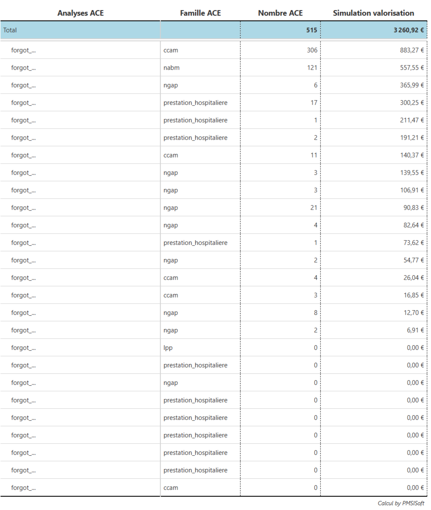
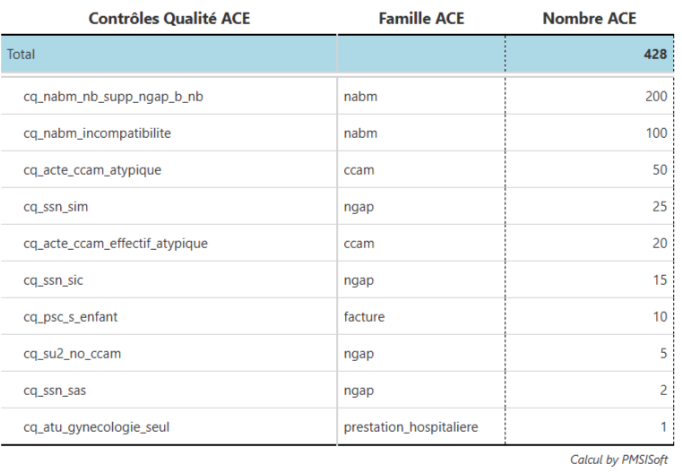
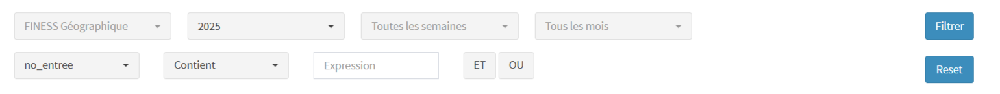
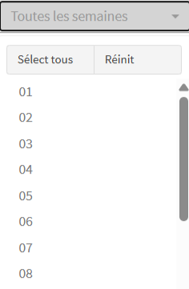
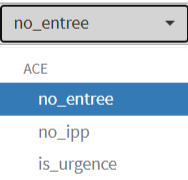
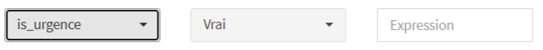

ACE MCO Requête
Requêtes de simulation de valorisation et contrôles qualité ACE MCO
Introduction
Cet écran propose 2 listes de requêtes sur les ACE MCO : 30 requêtes dites de Simulation valorisation et 10 requêtes de Contrôles Qualité (CQ).
Les requêtes Simulation valorisation ont pour principal objet de repérer les situations de sous-facturation dans l’établissement en FIDES (via filtrage par semaine) ou pas.
Les requêtes CQ ont un double objectifs : repérer avant envoi des lots de facturation les situations de rejets (et ainsi faire baisser le taux de rejets des factures ACE de létablissement) et améliorer la qualité et l’exhaustivité du codage des ACE.
Les CQ gérés à ce jour par les logiciels de production (exemple : présence d’un codage “âge urgence” en FU pour tout passage urgence) n’ont pas été développés ici, car sans intérêt. De nombreux CQ peuvent par ailleurs être requêtés via les 2 écrans “Base des ACE” et “Casemix ACE”.
Les requêtes sont conçues et maintenues à dire d’expert, sur la base du fichier des RSF-ACE, des référentiels PMSI (NGAP, CCAM AMELI, NABM, …) et des algorithmes développés et maintenus par PMSISoft.
La liste des requêtes a vocation à évoluer régulièrement en fonction des évolutions réglementaires, des retours et demandes des établissements.
PMSISoft propose et calcule des algorithmes d’analyses PMSI, conçus à dire d’expert sur la base des cahiers des charges et des référentiels du PMSI. Ces algorithmes produisent des requêtes identifiées et documentées.
Il est de la seule responsabilité de l’établissement de juger de l’opportunité et de la cohérence d’appliquer les résultats de ces requêtes au redressement des données de codage de l’établissement.
Chemin de l’écran
ACE MCO -> Requêtes ACE
Simulation valorisation
Tableau
Chaque requête est affichée avec son intitulé, sa famille (= le référentiel principal de la requête), le nomnbre cumulé d’ACE concerné par la requête et le cumuml des simulations valorisation de la requête.
Tri descendant sur la colonne “Simulation valorisation”
Exemple (fictif) de tableau des requêtes Simulation valorisation en accès Standard.

Une requête :
Une autre requête :
Export
Via le bouton “Télécharger (csv)”, export de toutes les situations correspondant aux requêtes de Simulation valorisation.
Pour l’exemple (fictif) ci-dessus, l’export comprendrait donc 515 lignes, dont 306 lignes pour les 306 lignes de la 1ere requête, etc…
Chaque ligne est documentée via 8 colonnes :
finess_geographiqueno_entreeno_ippinformation
Information complémentaire liée à la requête.
Exemples :
Pour la requête forgot_mop, information est l’âge de l’entrée sélectionnée.
Pour la requête forgot_ccam_modificateur_z, information est le ou les codes CCAM AMELI de l’entrée sélectionnée qui supposent un modificateur Z non codé.
analyse
L’intitulé de la requête.
Exemples : forgot_mop, forgot_ccam_modificateur_z, …
famille
Le référentiel principal concerné par la requête.
Exemples : ngappour la requête forgot_mop, ccam pour la requête forgot_ccam_modificateur_z, …
nb
Le nombre de codages concernés par la requête pour l’entrée sélectionnée
simulation_valorisation
Sur la base du tarif actif à ce jour du codage attendu non codé ou mal codé, calcul d’une simulation du gain de recettes brut pour l’établissement.
Exemple pour la requête forgot_mop : 5€ pour chaque MOP attendu non codé
Contrôles qualité
Tableau
Chaque requête CQ est affichée avec son intitulé, sa famille (= le référentiel principal de la requête) et le nomnbre cumulé d’ACE concerné par la requête.
Tri descendant sur le nombre d’ACE
Exemple (fictif) d’un tableau des requêtes CQ

Requêtes CQ
Pour chaque requête CQ, documentation simplifiée de l’algorithme.
On raisonne par entrée pour chacune de ces requêtes CQ.
Nous renvoyons aux cahiers de charges et textes officiels pour les sous-jacents définitionnels.
Certaines de ces requêtes CQ correspondent à des motifs de rejets des factures des entrées concernées.
Export
Via le bouton “Télécharger (csv)”, export de toutes les situations correspondant aux requêtes de Contrôles Qualité.
Pour l’exemple (fictif) ci-dessus, l’export comprendrait donc 428 lignes, dont 200 lignes pour la requête cq_nabm_nb_supp_ngap_b_nb, …
Chaque ligne est documentée via 7 colonnes :
finess_geographiqueno_entreeno_ippinformation
Information complémentaire liée à la requête.
Exemples :
Pour la requête cq_acte_ccam_atypique, information est le code CCAM.
Pour la requête cq_nabm_incompatibilite, information est le couple de code NABM incompatible
analyse
L’intitulé de la requête.
Exemples : cq_psc_s_enfant, cq_nabm_incompatibilite, …
famille
Le référentiel principal concerné par la requête.
Exemples : nabmpour la requête cq_nabm_incompatibilite, ccam pour la requête cq_acte_ccam_atypique, …
nb
Le nombre de codages concernés par la requête pour l’entrée sélectionnée
Filtrage
Le filtrage des 2 analyses (Simulation valorisation et Contrôles Qualité) se fait, à partir du fichier des RSF-ACE, via 2 lignes de filtres.
La première ligne correspond au filtrage de périmètre et la seconde ligne au filtrage par variable

Filtrage de périmètre
Le filtrage de périmètre comprend 4 filtres.
- Filtre “FINESS géographique”
Sélection d’un ou plusieurs FINESS géographique liés au FINESS ePMSI de l’établissement.
Par défaut, toutes les lignes du fichier RSF-ACE sont prises en compte.
- Filtre “Année”
Sélection d’une année d’import, à partir de 2022.
- Filtre “Semaine”

Sélection d’une ou plusieurs semaines sur la base de la date de soins (lignes en C, B), de la date de début de séjour (lignes en H, en P),de la date de l’acte (lignes en M, L), de la date de sortie (lignes en A).
Les semaines sont les semaines ISO-8601 (semaines du lundi au dimanche) de l’année sélectionnée.
- Filtre “Mensuel”
Sélection d’un ou plusieurs mois sur la base des dates des différentes lignes (voir Filtre “Semaine”).
Les mois sont les mois civils.
Ces 4 filtres de périmètre sont disponibles en accès Standard.
Filtrage par variable
Le filtrage par variable comprend 3 variables :

no_entreepour sélectionner les lignes RSF-ACE correspondant au numéro d’entrée saisi.no_ipppour sélectionner les lignes RSF-ACE correspondant au numéro d’IPP saisi.is_urgencepour sélectionner les lignes RSF-ACE liées via le numéro d’entrée à au moins un codage en FU (FU0, FU1, FU2, FU3, FU4) 5
Exemple :

Ce filtrage sélectionne toute l’activité ACE en urgence.
Le filtrage par variable est disponible en accès Professionnel.
Demande d’accès
Pour demander un accès PMSISoft ACE MCO Standard (gratuit, illimité dans le temps, ouvert à tout établissement MCO), nous contacter (en sélectionnant l’objet “Demande accès PMSISoft Standard”)
Notes de bas de page
ce critère permet de s’assurer que l’acte CCAM éligible au modificateur Z est codé par un Radiologue.↩︎
le RSF-ACE ne permet toutefois pas de repérer si le SAS, le SIC ou le SIM a été réalisé avant ou après 8h. A vérifier, au cas par cas dans le logiciel concerné de l’établissement.↩︎
le RSF-ACE ne permet toutefois pas de repérer si le SAS, le SIC ou le SIM a été réalisé avant ou après 8h. A vérifier, au cas par cas dans le logiciel concerné de l’établissement.↩︎
le RSF-ACE ne permet toutefois pas de repérer si le SAS, le SIC ou le SIM a été réalisé avant ou après 8h. A vérifier, au cas par cas dans le logiciel concerné de l’établissement.↩︎
on fait l’hypothèse que tout passage aux urgences est identifié via le codage d’un forfait “âge urgence” en FU↩︎